English Portfolio
Anthony Mauclair - IB English Language and Literature SL
IO
Global issue: public narratives legitimise violence as moral duty.
Field of inquiry: power, politics and justice.
Format: fifteen-minute recording, 25 August. Ten minutes from me, then five of teacher questions. One outline page allowed, ten bullet points maximum.
Non-literary body of work: three British First World War recruitment posters (1914-1915). The Parliamentary Recruiting Committee produced around 200 designs between 1914 and 1916. No conscription until January 1916, so every man addressed could legally say no. The whole campaign ran on persuasion, mostly shame. I picked these three because they track the campaign's arc instead of repeating one message.
Literary body of work: three Philip Larkin poems, all from The Whitsun Weddings (Faber, 1964). Extract: Sunny Prestatyn. The posters work before the harm, they make violence look like duty so it happens. Larkin works on the ordinary language that keeps hard things easy to accept: the advert, the wall, the ceremony.
Posters
1. Your King & Country Need You
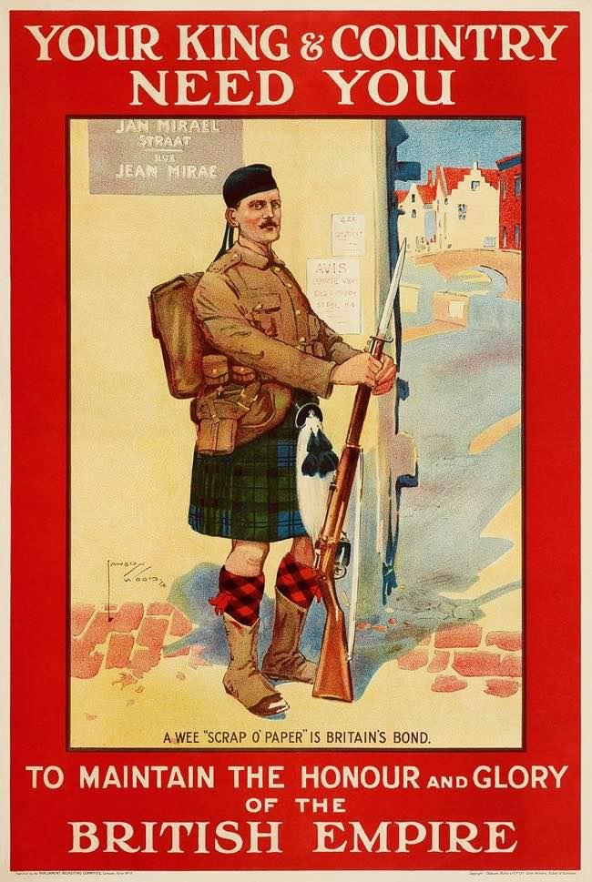
Lawson Wood, 1914. Published by the Parliamentary Recruiting Committee, printed by Dobson, Molle & Co. His signature and the year are in the bottom left corner of the picture.
- Direct address. "Your" makes the war a private relationship, so not enlisting stops being a decision and starts being disloyalty. You can decline a policy. You can't decline something that is already yours.
- Word order. King and Country come first, "you" arrives last. The viewer is joining an obligation that existed before him.
- Setting. The street sign reads "Jan Mirael Straat" over "Rue Jean Mirae", Flemish and French, so this is Belgium, the country Britain said it was defending.
- Soldier dead centre at the viewer's own eye level, which puts us on the pavement beside him. One man being addressed, not a crowd.
- Clean uniform, calm face, rifle upright and grounded, not raised. No blood, no mud, no enemy anywhere. The absence is the argument. You can't weigh a cost you have never been shown.
- The wall behind him carries pasted notices, one headed "AVIS". Even inside the image, the street is a surface for public messaging.
- "To maintain the honour and glory of the British Empire" - abstract nouns replace physical suffering. Honour and glory describe a country's character, they don't describe what soldiers do.
- "A wee 'scrap o' paper' is Britain's bond" - a treaty becomes a test of personal integrity. The phrase points at the 1839 Treaty of London guaranteeing Belgian neutrality. In August 1914 the German Chancellor, Bethmann Hollweg, was reported to have dismissed it as a scrap of paper. British propaganda never let go of that phrase.
- The Scots dialect matches the kilt above it. An imperial war arrives in a local voice, so a man in Glasgow hears it as being about him.
- Why it is first: this is the campaign at full confidence, in the early months when volunteering was still strong. It doesn't need fear yet.
- What I learned: I used to think propaganda worked by adding things. Louder colours, bigger claims. This one works by subtraction. Once I started asking what was missing from an image instead of listing what was in it, every other text in the IO got easier to read.
2. Britain Needs You at Once
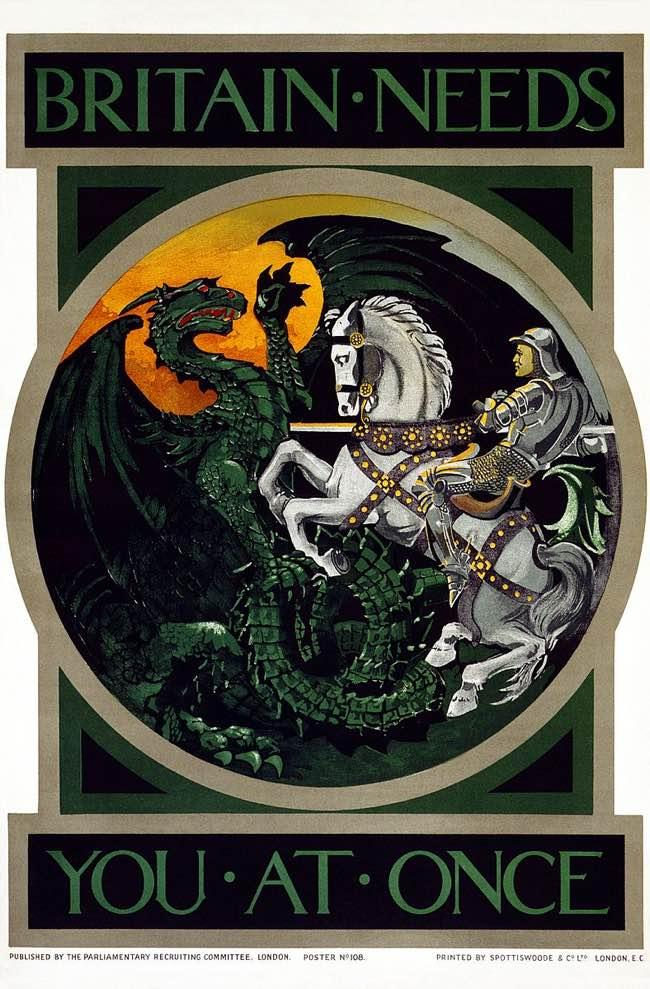
Parliamentary Recruiting Committee, Poster No. 108, 1915. Printed by Spottiswoode & Co., London. No artist credited.
- St George and the dragon. Modern industrial war rewritten as medieval heroism.
- Allegory. The enemy is a monster, not a person, so fighting stops feeling like harming people. The violence isn't hidden here, it is relabelled as something heroic.
- In the legend the knight never decides to fight. The dragon is already there and the ending is already known. The recruit is handed a part written before he arrived.
- White horse on the right against a dark green dragon on the left, inside a circle with an orange sun behind. Britain as innocence in a binary. Nothing is left to weigh up.
- "At once" removes deliberation. Poster one asks you to feel loyal. This one asks you to move.
- St George brings religious authority in, and it comes back as "God Save the King" on the third poster. Religion is part of the method, not a one-off.
- Why it is second: the first poster removes the war, this one removes the enemy.
- What I learned: the title says Britain but the knight is England's patron saint. Next to the Scots voice in poster one, that shows a campaign changing its national costume depending on who it wanted that week. I only saw it once the two posters were side by side, which is the whole reason a body of work beats a single text.
3. It Is Far Better to Face the Bullets Than to Be Killed at Home by a Bomb
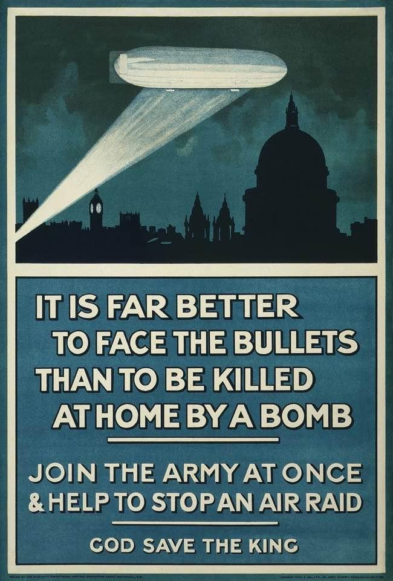
1915. Issued by the Publicity Department of the Central Recruiting Depot, Whitehall. Printed by Andrew Reid & Co., Newcastle-on-Tyne. No artist credited.
- 1915, voluntary enlistment falling. Honour dropped for fear.
- Low-angle viewpoint from street level. Dark teal palette, the Zeppelin hanging over a blacked-out skyline. Zeppelin raids on Britain began in January 1915 and reached London on 31 May.
- St Paul's dome is the largest shape on the skyline, with the clock tower at Westminster further left. The threat points at what the viewer already loves.
- False dilemma: face bullets abroad or wait to be killed at home. Both options are death, so staying is never allowed to look safe.
- A man who stays looks like he is hiding behind his family, not protecting it.
- The home front is reversed. Poster one put the war abroad, in Belgium. This one puts it over your own head.
- "Join the army at once" repeats poster two's "at once". "God Save the King" brings religion back.
- Why it matters most: the move from poster one to this one shows the campaign losing confidence in its own moral case. Honour worked in 1914, by 1915 it needed fear underneath. Conscription arrived in January 1916, which means persuasion had stopped being enough.
- What I learned: this is the poster that turned my IO from a list into an argument. A change of method is evidence. If honour had still been filling the recruiting offices, nobody would have needed a Zeppelin.
- Two things I caught late. The beam is narrow at the ground and wide at the airship, so it reads better as London's own searchlight finding the Zeppelin than as the Zeppelin's light. The city can see the threat and the picture shows nothing stopping it. Also, the small print says this one came from the Central Recruiting Depot in Whitehall, not the Parliamentary Recruiting Committee. Same campaign, different office. In the speech I said all three were PRC posters, and "the recruitment campaign" would have been the accurate phrase.
The French comparison
- I brought in one French poster to show the British method was a choice. "On ne passe pas!" by Maurice Neumont, 1918, issued by the Union des Grandes Associations Francaises: a mud-caked soldier on ruined ground, palette of mud brown and ash, nothing in the frame clean.
- The war is shown, not removed. Britain does the opposite.
- The title has no direct address. It is aimed at the enemy, not the viewer. Britain is recruiting, France is declaring.
- The reason is structural. France already had conscription, so its posters did not need to make volunteering look attractive.
- What I learned: Neumont's poster is a morale poster against a negotiated peace, not a recruitment poster, so calling it a "French recruitment poster" in the speech was loose. The comparison still holds, and it holds better stated properly: a state that can compel does not need to hide the mud.
Larkin
1. Sunny Prestatyn (extract)
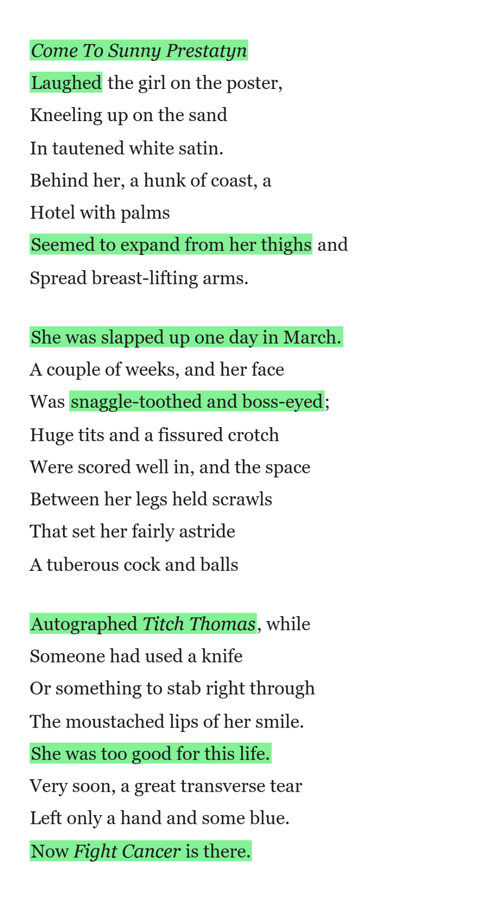
From The Whitsun Weddings (1964). Three eight-line stanzas about a railway poster for a Welsh seaside resort, which gets defaced and then replaced. The green highlights are the lines I used.
- Stanza one, the sell. The poem opens in the poster's own voice. The girl "laughed" the invitation out at the street, so the advert speaks to you instead of describing a place.
- The coast and the hotel "seemed to expand from her thighs". The resort and the woman are fused into one product. Poster one does the same with the soldier: the war becomes a person you would want to be.
- Stanza two, the reply. The register drops: "She was slapped up one day in March." That verb belongs to billposting and to violence at the same time.
- Within a fortnight her face is "snaggle-toothed and boss-eyed". The damage runs on through enjambment across the stanza break, so the poem's own form can't hold it in.
- Stanza three opens with the signature, "Autographed Titch Thomas". He wants credit. That makes it an answer to the advert, not random destruction.
- "She was too good for this life" arrives in the middle of the wreckage, not after it. It is the flattest line in the poem.
- Larkin italicises exactly three things and all three are what is physically on that wall: Come To Sunny Prestatyn, Titch Thomas, Fight Cancer. The advert, the reply, the replacement. The poem is tracking the wall, not the girl. And the wall never stays empty.
- "Now Fight Cancer is there." A disease has been renamed an enemy and the viewer is handed a side.
- The new appeal can't be defaced the way the old one was. Nobody scribbles on Fight Cancer, because attacking it puts you on the side of the disease. It is protected by its cause, not by being more honest.
- Why this is the extract: it is the only poem in the collection that is actually about a poster on a wall, and it shows the whole cycle. The advert goes up, it gets destroyed, the wall gets refilled.
- What I learned: I chose it because it was about a poster, which felt almost too convenient. What made it worth the time was the last line. For weeks I read this as a poem about the girl. It is a poem about what a wall is allowed to say.
- I also stopped trying to settle the tone of "She was too good for this life". It could be pity or it could be a sneer. I don't think the poem decides, and saying that out loud was stronger than picking one.
2. Essential Beauty
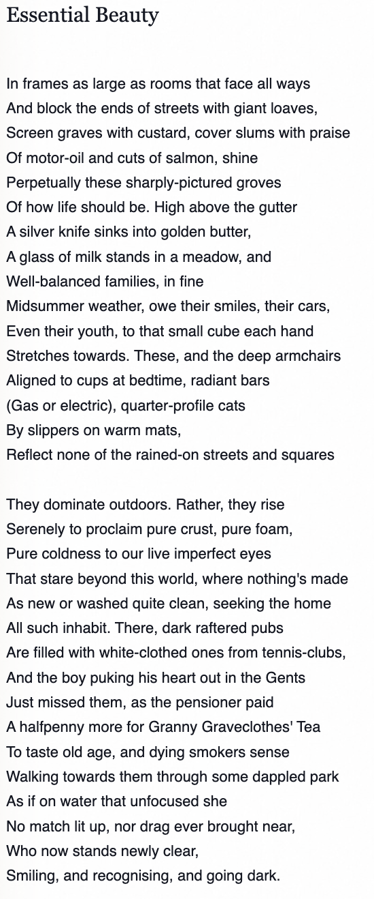
From The Whitsun Weddings (1964). Two sixteen-line stanzas about advertising hoardings. The first is the adverts, the second is the lives they don't reflect.
- Adverts, not war, but the same mechanism.
- "In frames as large as rooms that face all ways" - the billboards are bigger than the houses under them. The verb Larkin gives them later is "dominate".
- "Block the ends of streets" - the hoardings obstruct what is behind them, they do not decorate.
- "Screen graves with custard, cover slums with praise" - both verbs conceal instead of repairing, and the noun underneath is a grave. Something killed the person under that custard, and the advert's job is to sit on top so nobody asks what. That is the same move as a poster with no mud in it.
- "How life should be" - "should" admits the world being sold never existed.
- Ends with "dying smokers" seeing the woman from the cigarette advert walk towards them, a woman "No match lit up". No cigarette ever produced her. She goes dark as they die. The image that harmed them is the last comfort they get.
- Why it is in the speech: Titch Thomas could at least reach the wall in Prestatyn. Here the narrative is out of reach, high above the gutter, and nobody answers back.
- What I learned: the title is not sarcasm all the way down. "Essential" is the philosopher's word, the perfect form of a thing that no real loaf or family ever matches. Larkin half wants it too. That is why the poem stings, and why the smokers keep looking.
3. Naturally the Foundation Will Bear Your Expenses
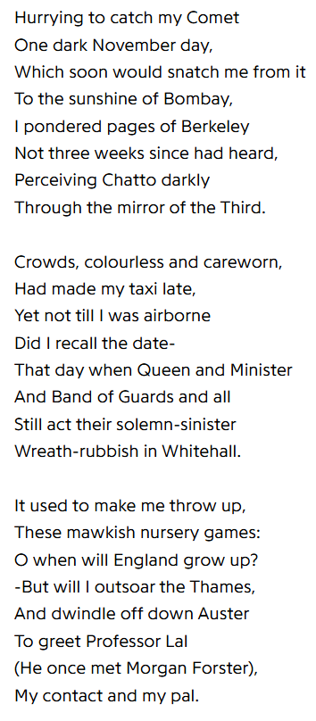
From The Whitsun Weddings (1964). A dramatic monologue in three eight-line stanzas. An academic flies to Bombay to give a lecture, on Remembrance Sunday.
- The setup: "Hurrying to catch my Comet / One dark November day". Crowds make his taxi late and he only remembers what day it is once he is airborne.
- The mourners are "Crowds, colourless and careworn". The alliteration blurs them into one grey mass, noticed only because they delayed him.
- He calls the ceremony "solemn-sinister" and the wreaths "Wreath-rubbish in Whitehall". His verb for the Queen and Ministers is "act", which turns remembrance into theatre.
- "Solemn-sinister" holds both at once. The ritual is genuinely grave and it is also doing something to the dead.
- Then "mawkish nursery games" and "O when will England grow up?"
- But this is a dramatic monologue with an unreliable persona. He is escaping on somebody else's money, which is the title's whole joke. He is off to greet Professor Lal, whose credential in brackets is "(He once met Morgan Forster)".
- The criticism sits in a mouth we can't respect. Objecting to the wreaths comes out petty instead of principled. The narrative protects itself by discrediting whoever refuses it.
- Details I had to look up. The Comet was the first jet airliner. "Berkeley" is the university in California, "Chatto" is the publisher Chatto and Windus, "the Third" is the BBC Third Programme. So one lecture is being recycled into a radio talk and then a book. "Auster" is the south wind. "Morgan" is what E. M. Forster's friends called him, so the speaker is claiming a closeness that is not even his own, it is second-hand.
- What I learned: Larkin makes you agree with a criticism and then makes you dislike the man saying it. That was uncomfortable, because part of what the speaker says about the ceremony is close to what my own IO says about the posters. The difference I settled on is that he sneers at the mourners and I am looking at the people who designed the message. The poem is a warning about how easily the first slides into the second.
How the six fit together
- Poster one removes the war. Poster two removes the enemy. Poster three brings the war home once the first two stop working.
- Sunny Prestatyn shows the wall refilling itself with an appeal nobody can attack. Essential Beauty shows the narrative lifted out of reach. Naturally the Foundation shows it discrediting the one person who objects.
- The posters do it on purpose and for a state. Larkin shows the same move in ordinary life, where nobody is in charge of it.
- My closing claim: the narrative never lies about the violence. It puts something people value in front of it.
Questions I prepared for
Why did you choose Sunny Prestatyn as your extract?
Because it's the only poem in the collection that is actually about a poster on a wall, so it lines up with a global issue about public messaging. It also shows the whole cycle and not one stage of it: the advert goes up, it gets destroyed, and the wall gets refilled straight away. That last part gave me my main point.
How does a poem about a holiday advert relate to violence?
Two ways. There's literal violence in it, since someone stabs a knife through the image. But the stronger link is the ending. "Fight Cancer" turns an illness into an enemy and gives the viewer a side to be on, which is the same move the recruitment posters make with a real war.
Does your global issue still apply today?
Yes, and the method hasn't changed. When a military action is called surgical, that word does what "honour" did in 1914. It replaces a physical fact with a word nobody objects to, and that's the word people repeat afterwards. The same thing happens whenever something is called a war on drugs or a war on terror, because once it's a war, opposing it sounds like being on the wrong side.
Larkin poems I worked on and dropped
Both are from High Windows (1974). Neither made the final six. The final three all come from one collection and are all about something displayed in public, which these two are not. The notes stay here because the ideas fed the final version.
Homage to a Government
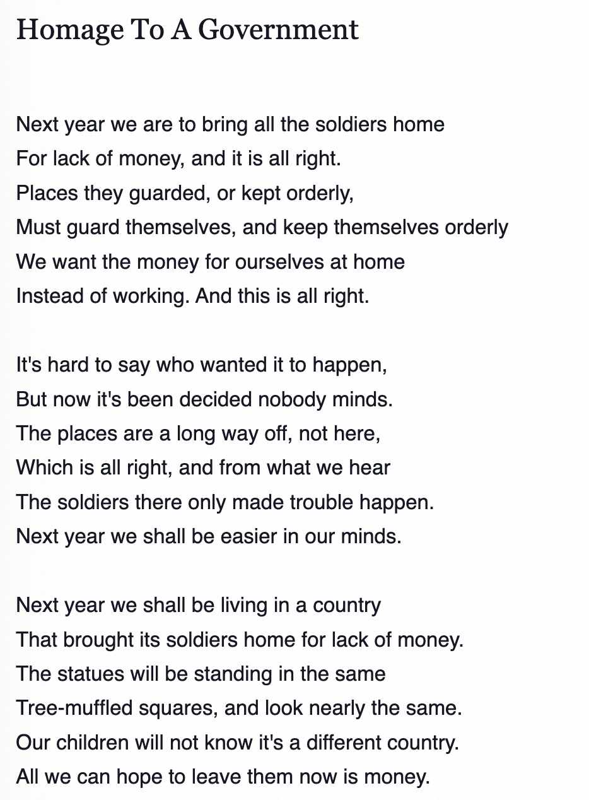
- 1968 withdrawal from east of Suez.
- "And it is all right" repeated. It sounds reasonable, the reasonableness is what unsettles.
- Same rhyme words in every stanza, the language circles without developing. That is how official justification behaves.
- "For lack of money" strips patriotism out. Duty becomes accounting.
- Contradicts the posters: governments build narratives of duty when they need them and drop them when they don't.
- What I learned: this poem gave me the idea that a narrative of duty can be withdrawn as easily as it is issued. That idea survived into the final IO as the move from honour in 1914 to fear in 1915.
The Explosion
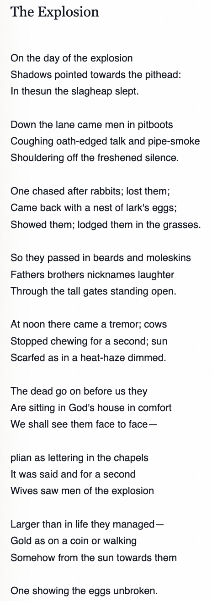
- "Fathers, brothers, nicknames, laughter" - the miners get individuality before public memory turns them into symbols.
- After the disaster: "larger than in life", "gold as on a coin". Steady hymn-like rhythm.
- Last line stands alone, one of the dead showing the eggs unbroken. A gesture aimed at the living.
- Complicates the global issue. This is idealisation after death, it comforts instead of recruiting, and Larkin does not mock it.
- Some narratives grow out of grief. They turn dangerous when suffering is made so noble that criticising it feels cruel, which is also how the posters protect themselves.
- What I learned: it is the kindest poem I looked at and that was the problem. An IO needs texts that push the same way. This one kept making me argue against my own global issue, which was good for my thinking and bad for a ten-minute speech. The point about criticism feeling cruel moved into my reading of Fight Cancer.
How I got here: earlier IOs
Three earlier attempts, oldest first. Each one is weaker than the final and each one fixed something.
Practice IO 1 - Morrissey lyrics
Global issue: the enduring desire for human connection. Texts: There Is a Light That Never Goes Out, Heaven Knows I'm Miserable Now, Bigmouth Strikes Again (The Smiths, 1984-1986).
Imagine wanting someone so much that dying next to them feels worth it. Desperation is shown clearly in Morrissey's songs: There Is a Light That Never Goes Out, Heaven Knows I'm Miserable Now and Bigmouth Strikes Again.
My global issue is the enduring desire for human connection, a deep wish to feel understood. Morrissey feels alone and is ready to risk his life for just one final moment of belonging. Through confessional lyrics, dark city imagery, and the repeated image of light, Morrissey transforms loneliness into something strangely romantic, showing how far someone can and will go to avoid being alone.
The song There Is a Light That Never Goes Out firstly explores the need for connection through a mix of poetic and realistic lyrics.
Throughout the song, Morrissey conveys the same idea. He changes what "home" truly means. Normally safe, here, "home" is lonely. When he says "I never want to go home," he means he'd rather face danger than isolation. The car becomes his true home, full of movement and possibility. Nighttime provides an escape from the world that did not accept him. Darkness provides liberty with which to speak truth. The road to travel means hope, the potential to be discovered.
Morrissey also employs both poetic and plain language in his lines. When he says "Please don't drop me home" it is plain. On the contrary, if he says "heavenly" or "light," the mood becomes romantic. The juxtaposition makes the song emotional and human.
The repeated image of light keeps it unified. The light isn't only love, it's survival. It's the energy that keeps him human. Each repetition represents a small act of hope, a refusal to give up on connection. At the end of it, he's not exactly happy, but the yearning in itself has significance. His yearning makes the song universal in the sense that everyone experiences the hunger to be known.
Morrissey then uses minimal lyrics to express deep isolation and desire. "Take me out tonight" is brief but passionate. When he repeats it, it's begging, not requesting. The desperation is conveyed with repetition, begging to be rescued from loneliness. The brevity makes it almost like he's addressing us directly.
Morrissey explores the same longing in his other songs too. In Heaven Knows I'm Miserable Now, he shows the emptiness of daily life. The title itself is ironic, he's miserable even when he gets what he thought he wanted. It shows how connection, not comfort, is what people truly crave. In Bigmouth Strikes Again, the tone shifts to frustration. He hides pain behind humor, using exaggeration and sarcasm to cover his loneliness. His "big mouth" becomes a shield, he pushes people away, wishing to be accepted.
Overall, Morrissey's songs all circle back to one theme: wanting to be seen and understood. He turns loneliness into truth. Through confessional lyrics, dark city imagery, and the repeated image of light, he shows that the need for connection never dies. The light that never goes out is hope that someone will care.
- What I learned: this one tells you how the songs feel and almost never says how they do it. "The mood becomes romantic" is a description. The single good moment is the point about "home" being reversed, because it starts from a word and ends at a meaning.
- The global issue is a feeling, not an issue. Nobody could disagree with it, which means there was nothing to argue.
- It also has only one body of work. The real IO needs a literary one and a non-literary one talking to each other.
Practice IO 2 - Liza Donnelly cartoons
Global issue: the gap between gender equality and reality. Texts: three cartoons by Liza Donnelly, a cartoonist for The New Yorker.
Zoom in: Where It All Begins
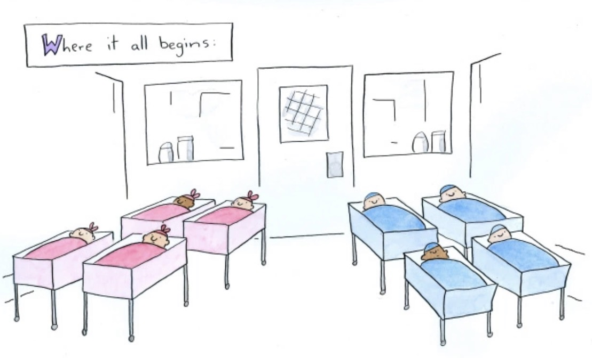
Zoom out 1: I Can't Decide What I'm Going to Be When I Grow Up
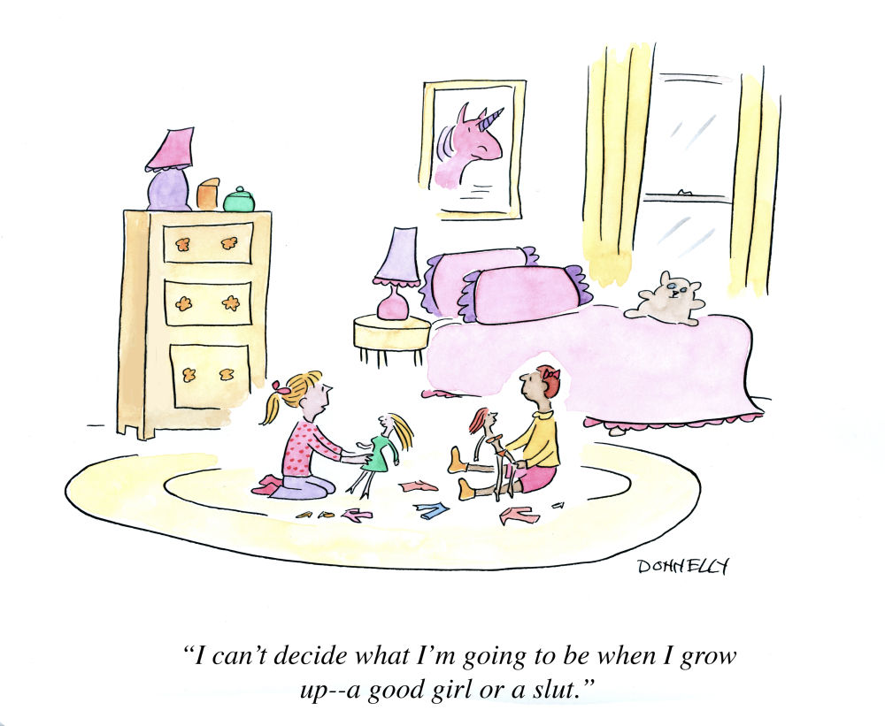
Zoom out 2: Daddy, Can I Stop Being Worried Now?
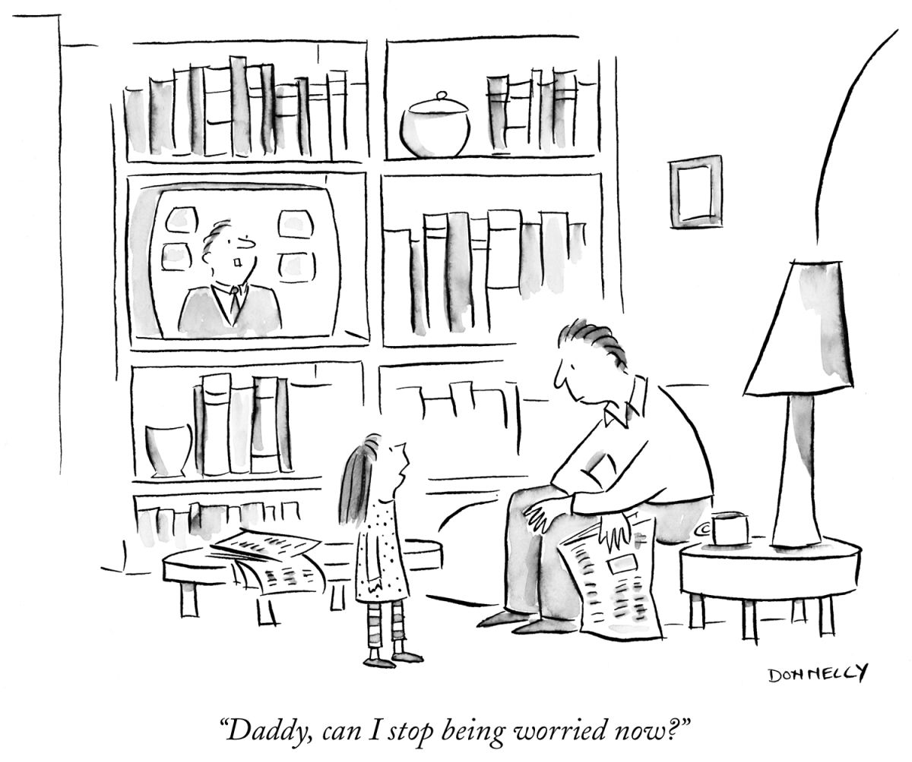
A baby hasn't spoken yet. A child hasn't chosen anything yet. And still, a lot already seems to be decided. This is what makes gender inequality so hard to notice. It rarely appears as something important or extreme. More often than not, it settles quietly into daily life and stays there.
My global issue is the gap between gender equality and reality. We're often told that boys and girls now grow up equal, with the same freedom and opportunities. However, when you look closely at Liza Donnelly's cartoons, that confidence begins to weaken. Her work shows how unequal expectations appear early and remain largely unchallenged.
Liza Donnelly is a political cartoonist who focuses on ordinary social situations, especially around gender. She doesn't explain her message directly. Instead, she presents familiar moments and lets the viewer sit and think with them. This is clear in three of her cartoons: Where It All Begins, I Can't Decide What I'm Going to Be When I Grow Up, and Daddy, Can I Stop Being Worried Now?. Together, they show how inequality begins early and survives because it feels normal.
To begin with, Where It All Begins is set in a nursery. Newborn babies lie quietly in their cribs. Girls are placed in pink. Boys in blue. Nothing dramatic is happening. And that is exactly the point.
The nursery places this moment at the very start of life. These babies haven't acted or chosen anything, yet they are already separated. It shows how inequality here isn't something that develops later, it's introduced immediately without a choice. The colours do most of the work. Pink and blue are so familiar that they barely feel like choices anymore.
Moreover, the room itself is divided cleanly down the middle. The separation looks neat and organised. Almost reasonable. This visual order makes the inequality harder to resist because it doesn't look cruel or unfair. This shows how inequality can feel orderly long before it feels unfair.
The caption, Where It All Begins, sounds gentle, but assigns responsibility. It marks division as the starting point of life, framing inequality as natural and not constructed, which makes the viewer less likely to question it.
Moving beyond the nursery, that early separation also appears in I Can't Decide What I'm Going to Be When I Grow Up. Two girls sit on the floor, playing with dolls in a pink bedroom. The setting feels safe and familiar. Then the line lands: "a good girl or a slut."
The girl's future isn't framed around her choices, but instead around how she'll be judged. The fact that a child is forced to choose between shame and praise instead of possibility feels unsettling, and it should. Furthermore, the toys, the colours, the space all point to childhood. But the language doesn't. That mismatch makes the viewer uncomfortable, exposing how adult judgement enters childlike spaces quietly in real life. Equality itself might exist as an idea, but reality has already narrowed how the child imagines herself in the future.
Moving on, a similar pattern appears in Daddy, Can I Stop Being Worried Now?. A young child looks up at her father and asks if she's allowed to stop worrying. That question alone says a lot.
The child appears small and unsure. The father seems distant. There's no reassurance. That absence is deliberate. It suggests that anxiety has become expected instead of questioned. This normalises emotional pressure and shows how inequality is maintained without open conflict. Once again, Donnelly keeps the scene calm and ordinary. Emotional pressure is passed down and accepted. Here, inequality survives not through force, but through habit.
Across Donnelly's work, girls are shown learning to worry, to behave, and to limit themselves, while adults stand by as if this is simply the way things are. It's almost like worrying is part of the curriculum at this point!
In conclusion, when these cartoons are viewed together, a clear progression takes shape. Inequality begins with separation, it deepens through judgement, and settles into emotional burden. Donnelly's work is persuasive because it never lectures. It relies on recognition. By presenting inequality as ordinary, Donnelly exposes why it survives, because what feels normal is rarely resisted.
Ultimately, the gap between gender equality and reality is not kept open by hostility. It is kept open by familiarity. And it is in those everyday moments that Donnelly asks the viewer to look again.
- What I learned: this is where the zoom in and zoom out structure clicked, and where I first argued from what an image leaves out. "There's no reassurance. That absence is deliberate" is the same move as the missing mud in the final IO.
- Short sentences work out loud. "And that is exactly the point" is easy to say and easy to follow.
- The third cartoon is the weakest fit and I can see it now. There is a newsreader on the television behind them and a newspaper in the father's hands, so her worry is most likely about the news, not about being a girl. I bent the text to fit the issue. In the final IO I picked the issue to fit the texts.
- Still no literary body of work here, so it was only ever half the task.
IO draft 3 - first version with posters and Larkin
Global issue at this stage: how narratives transform violence into identity. Same two bodies of work as the final, but six different texts.
1. Follow Me! Your Country Needs You
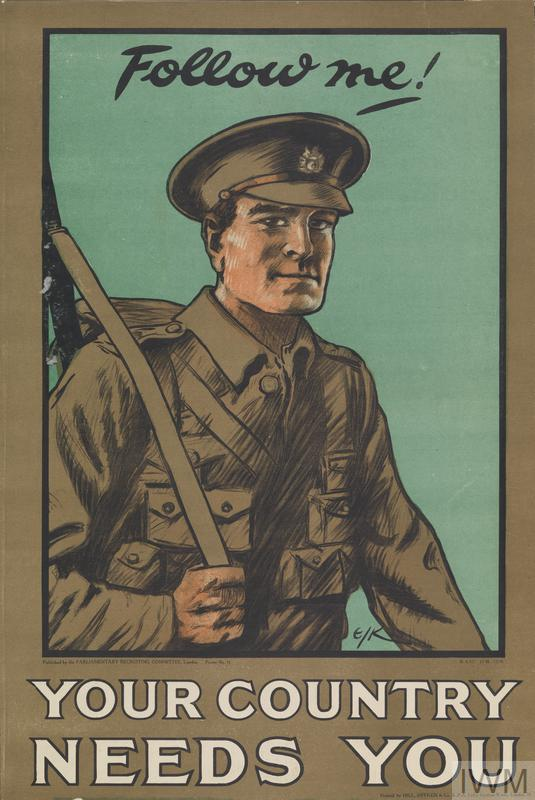
2. Your Country's Call - Isn't This Worth Fighting For?
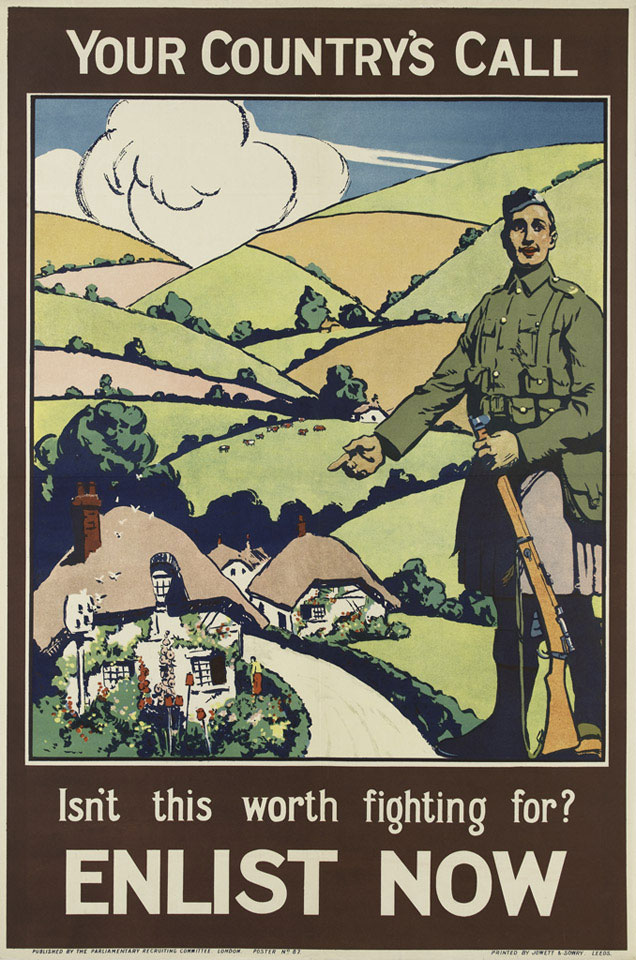
3. Women of Britain Say - Go! (E. Kealey, 1915)
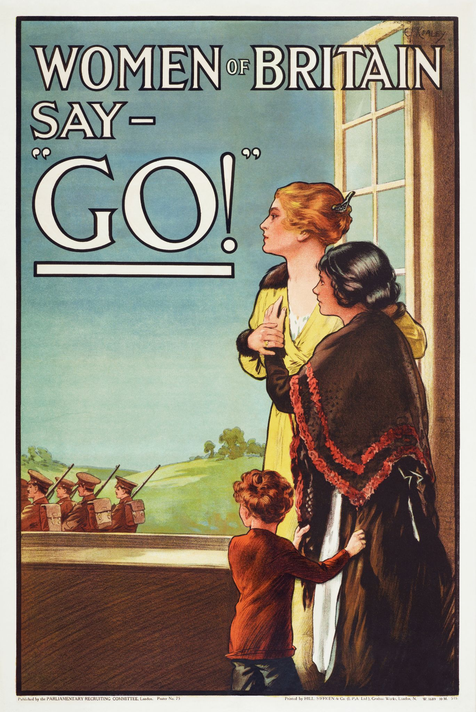
1. MCMXIV
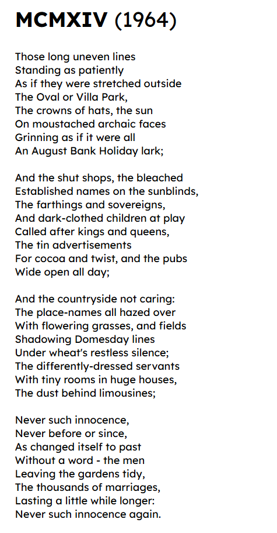
2. Aubade
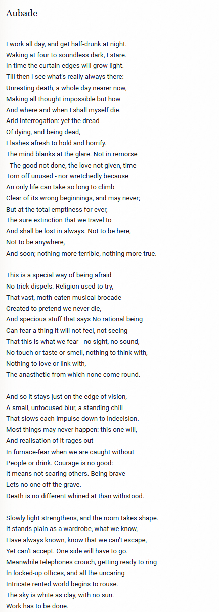
3. This Be The Verse
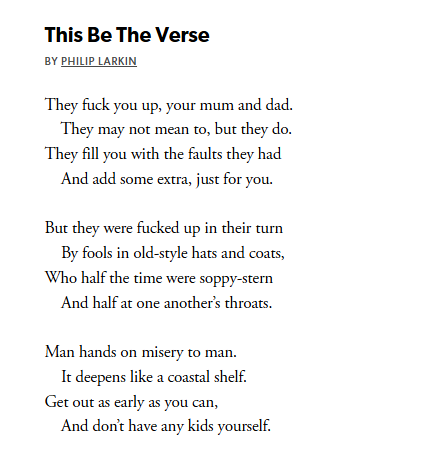
A society does not need to force people into violence if it can teach them to see violence as duty. That is what makes this form of control so dangerous. The most effective systems do not look like control at all. Instead, they rely on loyalty, protection, family, and honour. As a result, people do not feel forced. They feel as though they are doing the right thing. But in reality, by the time they question it, the belief has already taken hold.
Today, in my IO, I will be exploring the global issue of how narratives transform violence into identity. I will explore this through two bodies of work that approach this issue from different directions. My non-literary body of work consists of a set of British World War One propaganda posters: Follow Me Your Country Needs You, Your Country's Call Isn't This Worth Fighting For, and Women of Britain Say Go. My literary body of work is the poetry of Philip Larkin: MCMXIV, Aubade, and This Be The Verse.
Across these works, violence is not presented directly. Instead, it is reshaped through language, imagery, and tone until it feels meaningful and justified. The propaganda posters construct this transformation by linking war to duty, masculinity, and protection. In contrast, Larkin exposes what happens once these ideas are accepted, revealing the ignorance, fear, and damage beneath them.
To begin with, in Follow Me Your Country Needs You, the key technique is visual omission. There is no blood, no enemy, and no suffering anywhere in the image. This absence removes any sense of danger, so the audience is not forced into confronting the reality of war. As a result, enlistment feels controlled and purposeful instead of violent, making participation easier to accept. This omission also narrows the focus of the audience, keeping attention on action and away from consequence, which makes the decision appear simple and necessary.
Moreover, the phrase "Follow me" uses the imperative, but the tone is calm, not aggressive. This creates a sense of direction instead of fear. The audience feels that action has already begun, and they are expected to join. Therefore, refusal feels like going against something already in motion. This positions the audience as already involved, increasing pressure without direct force.
Furthermore, the phrase "your country needs you" uses direct address. The second person pronoun "your" personalises the message. War becomes an individual responsibility instead of a distant event. The audience begins to associate participation with identity, where joining reflects loyalty and character. This makes the choice feel moral, not optional.
In addition, the soldier is presented through idealised imagery. He appears clean, composed, and confident, with no sign of fear or injury. This replaces the reality of violence with honour and strength. As a result, the audience is encouraged to perceive war as admirable instead of destructive, which reinforces participation as a positive identity.
In Your Country's Call Isn't This Worth Fighting For, the word "call" uses loaded diction, suggesting a moral duty. The rhetorical question "isn't this worth fighting for" pressures agreement, which guides the audience into accepting violence. The peaceful countryside imagery, including homes and fields, links war to the protection of something familiar. Consequently, violence is framed as defence and not harm, which reduces resistance.
In Women of Britain Say Go, domestic imagery places women and a child inside their home, looking out at soldiers leaving. The home represents safety and emotional truth. By connecting war to that space, the poster links violence to love and responsibility. Moreover, the phrase "say go" gives women authority, while men are positioned as those who must act. This creates pressure on male identity, where participation becomes proof of loyalty and masculinity. Therefore, not going to war feels like failure. This social pressure strengthens the expectation to participate.
Overall, these posters use omission, emotional imagery, and persuasive language to reshape violence into duty and identity, where participating feels necessary instead of harmful.
Moving on to Philip Larkin's poems. In MCMXIV, Larkin shows what happens once these narratives have already been accepted. He describes "those long uneven lines" of men waiting to enlist, "standing as patiently as if they were stretched outside the Oval or Villa Park." This simile compares enlistment to a normal public event. As a result, the audience sees how ordinary the situation feels to the men, which creates discomfort because we understand the violence they are moving toward.
Moreover, the tone of the poem is calm and reflective, not dramatic. This calmness suggests that war is not seen as frightening by the men themselves. Instead, it appears expected and accepted, which shows how deeply the narrative has shaped their thinking. This normality highlights how effectively violence has been disguised.
Furthermore, the final line "Never such innocence again" once more uses loaded diction. The word "innocence" suggests ignorance, not purity. As a result, the audience understands that these men accepted war because they did not recognise it as violence, showing the lasting effect of these narratives.
In Aubade, Larkin removes all comforting narratives and forces the audience to confront reality directly. The poem uses a semantic field of fear and emptiness, with phrases like "unresting death" and "total emptiness for ever." There is no heroic framing, which makes the experience feel raw and unavoidable. As a result, the audience sees what remains after meaning is removed from suffering. In addition, Larkin dismisses comforting beliefs through the phrase "specious stuff." This suggests that belief systems soften fear, similarly to how propaganda softens violence. As a result, the audience begins to question how narratives shape understanding.
In This Be The Verse, Larkin shifts to everyday life. The opening line uses blunt and shocking diction about what "your mum and dad" do to you. This removes any distance, which forces the audience to confront harm directly. Additionally, the line "They may not mean to, but they do" shows that this damage is normal and repeated. The cyclical idea that "man hands on misery to man" reveals how suffering becomes embedded across generations. As a result, harm no longer appears as violence, even though it continues to exist, showing how narratives affect everyday life.
In conclusion, both the British propaganda posters and the poetry of Philip Larkin reveal how narratives reshape violence into identity and duty by redefining it as something normal and necessary. The posters actively construct meaning by presenting violence as a form of duty, masculinity, and protection, which encourages individuals to internalise it as part of their identity. In contrast, Larkin strips away this constructed meaning, revealing the fear, damage, and ignorance left when these narratives are removed. It becomes deeply personal and difficult to resist, because it is no longer recognised as violence at all.
- What changed, and why. The global issue went from "narratives transform violence into identity" to "public narratives legitimise violence as moral duty". "Identity" could mean almost anything. "Public" and "duty" each cut something out, and a narrower issue is easier to prove.
- The three posters here all do the same thing: clean soldier, direct address, peaceful scene. I was proving one point three times. The final three change method between 1914 and 1915, so the choice of posters does some of the arguing for me.
- The Larkin choices were the bigger problem. MCMXIV fits. Aubade is about death, not violence, and This Be The Verse is about parents. I was stretching the word "violence" until it meant "harm of any kind". The final three are all about something displayed in public, which matches the word "public" in the issue.
- Every paragraph in this draft ends "As a result, the audience...". Technique, effect, repeat. The final speech lets one observation lead into the next, and that is what makes it sound like an argument and not a checklist.
- "Loaded diction" appears twice and tells you nothing. In the final I name the actual word and say what it does: "slapped", "act", "screen".
- What survived: the opening line, omission as the key idea, and "your" as the word doing the work.
Exemplars I studied
- A 35/40 IO on Toni Morrison's The Bluest Eye and Nelson Mandela's speeches, global issue the dehumanisation of the less powerful. What I took from it: it quotes by line number inside the extract, and almost every point ends on what the writer wants that specific audience to do. It also shows that you can score high while speaking plainly. What I did not copy: it runs each body of work as a separate block, and I wanted mine to keep cross-referencing.
- A model script on Margaret Atwood's The Handmaid's Tale and Jean Kilbourne's documentary Killing Us Softly, global issue the commodification of women. What I took from it: the conclusion leaves the texts and lands on the present day. My "surgical strike" ending comes straight from seeing how well that worked. It also treats names as evidence ("Offred" as "of Fred"), which is the kind of single-word attention I tried to give "your" and "slapped".
Paper 1
Guided analysis of a non-literary text. The job is not describing everything, it is explaining how selected choices build the message.
Intro: text type, content in one line, who made it, context, tone, purpose, audience, message.
Body paragraphs, PEEL:
- Point - a claim about a feature
- Example - exactly what is visible or quoted
- Explanation - method, effect, how it positions the audience
- Link - back to purpose or message
Visual texts: start with whatever the eye lands on first. Then composition, colour and contrast, gaze, text and typography. Everything in the frame is deliberate.
Start with what is explicitly visible, then what it implies, then the wider message. No guessing motives or private thoughts. Short quotes, properly analysed. If time is nearly up, close the paragraph, never start a new one.
Paper 2
Comparative essay on two literary works studied in class. Mine are both plays: A Doll's House (Henrik Ibsen, 1879) and A Streetcar Named Desire (Tennessee Williams, 1947).
1 hour 45 minutes. Four general questions, answer one. No books, so plot, quotes and stage directions all come from memory. The questions never name the plays. They name a concept (setting, gender, conflict, identity) and I bend what I know to fit it. A work used in the IO is not allowed, which is why Larkin stays out of this.
What gets rewarded: knowing both plays and having an arguable answer to this exact question, explaining how each playwright makes meaning and judging how well it works, comparing all the way through, one argument built step by step, and clear formal English with the right terms. Comparison is its own strand, so a paragraph with one play in it is a wasted paragraph.
The two plays
A Doll's House - Henrik Ibsen, 1879
- Three acts, one room, Christmas, Norway.
- Nora looks like a playful, spoilt wife. Years ago she secretly borrowed money from Krogstad to take her husband Torvald to Italy and save his life, forging her dead father's signature to do it.
- Torvald, now bank manager, sacks Krogstad. Krogstad blackmails her.
- Nora flirts, stalls and dances the tarantella to stop Torvald reading the letter.
- When he reads it he attacks her and thinks only of his reputation. Krogstad, reunited with Kristine, returns the bond, and Torvald instantly "forgives" her.
- Too late. Nora calls herself a "doll-wife", says she must educate herself, and walks out. A door shuts.
- What I learned: nothing physical happens to Nora, and that is the design. Everything is done with money, pet names and a letterbox. I stopped looking for the dramatic moment and started watching the small ones. Her changing out of the party costume before the final talk says more than most of her lines.
- Act I is exposition. The past comes out through conversation. It is not a flashback and writing "flashback" loses marks.
- The play is translated, so wording depends on the edition. Mine is Michael Meyer's (Methuen Student Edition): "my skylark", "No debts! Never borrow!", "first and foremost a human being". The door slam I describe and never quote, because each translation words that stage direction differently.
A Streetcar Named Desire - Tennessee Williams, 1947
- Eleven scenes, a two-room flat in New Orleans, spring to autumn.
- Blanche DuBois, a fading Southern belle who has lost the family estate Belle Reve, arrives at her pregnant sister Stella's flat.
- Stella's husband Stanley Kowalski, working-class and Polish American, despises her airs and digs into her past. Blanche hopes to marry his friend Mitch.
- Stanley tells Mitch the truth about Laurel: the hotel she was thrown out of, the teaching job she lost over a seventeen-year-old pupil. Mitch rejects her.
- While Stella gives birth, Stanley rapes Blanche. Weeks later Stella chooses not to believe her, and Blanche is led away to an asylum, relying on "the kindness of strangers". The poker game goes on.
- What I learned: Williams puts Blanche's head on the stage. Only she and the audience hear the polka, so we are never watching her from the outside. Ibsen keeps everything realistic and lets small actions carry the meaning. That difference in method is the most useful comparison I have, because it works for almost any question.
- Stanley is hard to write about and I learned to say why. He is right about the facts of Blanche's past and he still does the worst thing in the play. Being right about someone is not the same as having the right to destroy them.
- Spellings I practised: Kowalski, DuBois, New Orleans, Belle Reve, Tennessee Williams.
The central comparison
- Both plays ask whether the home protects women or traps them.
- Ibsen lets Nora name her role and leave. Williams shows Blanche removed and Stella staying in a marriage kept alive by denial.
- Ibsen ends on a break, the door. Williams ends on a loop: "This game is seven-card stud."
- Both homes confine in opposite ways. Ibsen's enclosed, comfortable room hides inequality. Williams's flat has curtains for doors and street noise inside, so it exposes a vulnerable woman from the first scene.
- What I learned: "Nora is strong, Blanche is weak" is the lazy version and it is wrong. Nora has a door she can walk through and somewhere, however uncertain, on the other side of it. Blanche has no money, no home and no one. Compare the choices open to each woman before judging the women.
Rules from class
- Compare inside every body paragraph. Start with a thematic topic sentence about both plays, never one paragraph per play. Similarities and differences both count.
- Real connectives: likewise, similarly, in contrast, comparatively, whereas, unlike.
- Treat them as plays. Stage directions, setting, costume, movement, sound, lighting and delivery, not only quotes.
- Say audience, never reader. "As an audience, we..." has to lead to a precise effect: what we see, hear, know, expect or reconsider.
- Tone matters. A pet name can sound playful and still carry unequal power.
- Violence question: cover every type (verbal, financial, emotional, legal, physical, sexual). The rape alone is not enough.
- Role of men question: Stanley and Mitch, Torvald and Krogstad. No other men.
- Motifs question: the grapes in Scene 11 and the stove in A Doll's House.
- Most dramatic scene: Scene 10.
- Opening questions: Act I is exposition, use the word. Ibsen opens with quiet duologues before the stage suddenly crowds.
- Avoid a comedy question. There is not enough comedy in either play to sustain one.
- Endings: do not describe them. Argue whether they work and why.
- A critic can support a reading if it is tested against evidence. Dropping a name earns nothing on its own.
- Conclusion line that fits many questions: deliberate cruelty has to be challenged and is never forgivable.
- Write the question number first. Put the plan in the answer booklet, not only on the question paper.
- First time, write A Streetcar Named Desire in full, then Streetcar is fine. A Doll's House stays in full. Underline play titles when writing by hand.
- Six topics flagged in class: location and setting, violence, motifs, role of men, role of women, resilience.
How I build the essay
Introduction, body paragraphs, conclusion. Every body paragraph runs Point, then Ibsen, then Williams, then so what.
- Point - one claim that answers the question about both plays.
- Ibsen - evidence, method, effect on the audience.
- Williams - a connective, then evidence, method, effect.
- So what - why the similarity or difference matters for the question.
Introduction in four moves: context (both writers, both dates, the question's key word), the shared answer, the key difference ("whereas Ibsen... Williams..."), then why that difference matters.
Conclusion in three sentences with no new evidence: answer again, the sharpest difference between the endings, the wider point.
The chain inside each explanation: name the technique, say what it suggests, say why (because, so, which shows), say how the other playwright does it differently, say what each ending costs.
Timing: 10 to 15 minutes to read, choose and plan. About 80 writing. 10 checking that every paragraph answers the exact question.
Choosing the question: read all four, underline the key concept and the command word, and for each one ask whether I can name three moments from each play right now. Pick the one with the most evenly balanced evidence, not the one that sounds cleverest.
The one thing that has to be adapted on the day: the question's exact key word goes in the first and last sentence of each paragraph, and in the introduction and conclusion. A learned paragraph that never uses the question's word loses marks however good it is.
Method toolbox
- Stage directions - Ibsen's are short and realistic (Nora moving towards the stove, hiding macaroons, the door). Williams's are long, poetic and symbolic (Blanche "suggests a moth", the "blue piano", "lurid reflections" in Scene 10). Ibsen lets small actions carry meaning. Williams makes the stage show us Blanche's mind.
- Props and symbols - Ibsen: macaroons, Christmas tree, letterbox, bond, costume, stove, door. Williams: paper lantern, naked bulb, bath, alcohol, trunk, tiara, bus ticket, grapes. Start with what the object does literally, then track how its meaning changes.
- Sound - Ibsen keeps it realistic: the letter dropping, the tarantella, the final door. Williams uses it expressionistically: blue piano, Varsouviana polka, gunshot, trains.
- Lighting - light means truth and exposure. Blanche avoids strong light, Mitch tears the lantern off in Scene 9. In Ibsen the lamp is brought in and the candles on the tree burn down. Who controls the light controls how a woman is seen.
- Costume - Nora takes the fisher-girl costume off before the final talk. Blanche ends still wearing hers, the soiled gown and rhinestone tiara.
- Entrances and exits - both plays end with a woman crossing the threshold. Only Nora chooses to.
- Dramatic irony - we watch Nora eat macaroons before she denies it. Blanche sings in the bath while Stanley tells Stella about Laurel. Irony makes the confident man look limited and makes us fear for the woman.
- Foils - Kristine and Krogstad are an honest couple set against the Helmers. Eunice and Steve show violence normalised next to Stella and Stanley. Minor characters show the social rules, not just one bad marriage.
- Dialogue - who starts, who interrupts, who uses pet names, who speaks longest. By Act III Nora sets the topic and Torvald has to answer.
The five themes
Two themes make an essay. In each pair below, A Doll's House comes first and Streetcar second. No quotation is used twice, so any two themes can share an essay.
- Gender, women, men, marriage, love, family, relationships - theme 1 then theme 2.
- Power, control, inequality, freedom, money, class - theme 2 with theme 1 or 3.
- Violence, cruelty, conflict, suffering, victims - theme 3 then theme 2.
- Home, setting, belonging, outsiders - theme 2 then theme 3.
- Truth, lies, secrets, identity, illusion - theme 4 then theme 1.
- The past, memory, time, guilt, endings - theme 5 then theme 2.
Themes 1 and 2 are different arguments. Theme 1 is how a woman's role is made to feel normal. Theme 2 is what keeps her in it.
1. Gender and relationships
- "Is that my skylark twittering out there?" (Torvald, Act I, his first line, called from the study) against "Meat!" (Stanley, Scene 1, throwing the package up to Stella). Both plays fix the roles before any argument starts. Torvald does it with a sweet name, Stanley with a shout, and Stella's laugh makes it look like love.
- "Millions of women have done it." (Nora, Act III) against "Life has got to go on." (Eunice, Scene 11). Nora says women give up too much and stops. Stella is told to keep going and does.
- "A songbird must have a clean beak to sing with." (Torvald, Act I) against "not clean enough" (Mitch, Scene 9). Both men use cleanness to judge a woman. Neither asks the same of himself.
- "we two shipwrecked souls" (Mrs Linde, Act III) against "You need somebody. And I need somebody too." (Mitch, Scene 6). Both plays offer a second couple built on honest need. Ibsen lets his last. Williams lets Mitch take it back three scenes later.
- Big picture: can love exist without one person being owned? Ibsen says yes, once the woman refuses the role. Williams shows women accepting the role or being broken by it.
2. Power and agency
- "No debts! Never borrow!" (Torvald, Act I) against "the Napoleonic code" (Stanley, Scene 2). Both men back their power with money and law. Torvald gives his own orders. Stanley borrows the law's authority. The irony is that Nora has already borrowed, so his control is less complete than he thinks.
- "first and foremost a human being" (Nora, Act III) against "I have always depended on the kindness of strangers." (Blanche, Scene 11). Nora repeats Torvald's phrase and changes its ending. "Depended" is the honest word in Blanche's line. Nora chooses to go, Blanche is taken.
- "your feminine helplessness" (Torvald, Act III) against "I am the king around here" (Stanley, Scene 8). Both need a woman beneath them to feel important. Torvald wraps it in a compliment, Stanley just says it.
- "I must educate myself." (Nora, Act III) against "I'm not in anything I want to get out of." (Stella, Scene 4). Both women state a choice, in opposite directions. How free is Stella's when she is pregnant with no money of her own?
- Big picture: power in both homes comes from money and law more than strength. The test is who controls the exit.
3. Violence
- "thrown into the gutter" (Krogstad, Act I, blackmail) against "the sound of a blow" (stage direction, Scene 3, physical). Ibsen's threat is quiet and aimed at reputation. Williams's is heard through a wall and aimed at the body. Because it is offstage, the audience has to imagine it.
- "a hypocrite, a liar" (Torvald, Act III, verbal) against "We've had this date with each other from the beginning!" (Stanley, Scene 10, sexual). The insults replace the pet names within seconds. "Date" fakes consent and "from the beginning" makes a choice sound like fate. The acts are not equal and the essay has to say so.
- "an expensive pet" (Torvald, Act I, financial) against "Back to Laurel!" (Stanley, Scene 8, emotional). Both men hurt a woman while looking generous.
- "The law does not concern itself with motives." (Krogstad, Act I, legal) against "Jacket, Doctor?" (Matron, Scene 11, institutional). In both plays a woman is hurt by an official system that never asks for her side.
- Big picture: threats, insults, money, law, a fist, rape. Ibsen keeps it inside words. Williams makes it loud and physical. Ibsen shows cruelty a woman can leave. Williams shows a home that protects the violent man.
4. Appearance and reality
- "I could never act against your wishes." (Nora, Act I, after we watched her eat the macaroons) against "rarely touch it" (Blanche, Scene 1, after we watched her drink). Same dramatic irony. Nora's lie is a small rebellion, Blanche's hides shame.
- "doll-wife" (Nora, Act III) against "I don't want realism. I want magic!" (Blanche, Scene 9). Nora names the illusion herself and gains a way out. Blanche's is exposed by men and used against her.
- "so proud of being a man" (Nora to Mrs Linde, Act I) against "fifty per cent illusion" (Blanche, Scene 2). Both women think a relationship with a man needs some pretending.
- Big picture: the surface of each home is held up by lies the men want to be told. Ibsen treats truth as freedom. Williams shows it used as a weapon.
5. Past and memory
- "It's in your blood." (Torvald, Act I) against "epic fornications" (Blanche, Scene 2). Both women live with what the men before them left behind. Torvald blames Nora for it. Blanche blames the men.
- "I am saved!" (Torvald, Act III, burning the bond) against "a boy, just a boy" (Blanche, Scene 6, as the polka starts). He says "I", not "we", and Nora notices. Nora's past is a letter, outside her, so she can walk away from it. Blanche's is music inside her head, so it follows her out.
- "like being a man" (Nora, Act I) against "I took the blows in my face and my body!" (Blanche, Scene 1). Both first appear spoiled or fragile and both are carrying years of effort nobody noticed.
- Big picture: Ibsen suggests the past can be faced and left. Williams suggests guilt cannot.
Five quotations I still need to check against my own printed edition before the exam: "a hypocrite, a liar", "like being a man", "I could never act against your wishes", "It's in your blood", "I must educate myself".
How I remember the quotes
- Fragments, not speeches. Two to six words slide into my own sentences.
- In story order. If I know what happens next I know which quote comes next.
- In pairs. Every Doll's House quote has a Streetcar partner, because the exam rewards pairs.
- If I can't name the technique, I don't know the quote yet.
- Test, don't reread. Cover it, say it, write it, check it.
- A moment described exactly earns marks without quotation marks. If unsure of the wording, describe and don't invent.
Mistakes that cost marks
- Retelling the plot.
- Writing one play, then the other.
- Naming a technique without its effect.
- Calling Torvald and Stanley the same kind of abuser. Torvald's control is financial, verbal and paternal. Stanley's is physical and sexual.
- Calling Nora's ending simply happy or Blanche's simply sad. Nora leaves with no guaranteed income or home and without her children.
- Excusing or attacking Stella instead of explaining her choice.
- Inventing quotes.
- Calling Act I a flashback.
Practice essay - relationships
Written by me as practice, on how relationships are presented in both plays. Slips in spelling and one mixed-up title are corrected here. What I would change is listed underneath.
Love can make someone feel valued, while at the same time deciding who they are allowed to be. Henrik Ibsen's A Doll's House, written and first performed in 1879, examines a middle-class Norwegian marriage where women had little independence. Tennessee Williams's A Streetcar Named Desire, written and first performed in 1947, is set in post-war New Orleans, where Blanche DuBois's old-fashioned values clash with Stanley Kowalski's power in the home. Although the plays come from different countries and periods, both expose the pressure on relationships within the household. Both playwrights depict a woman's preconceived role being made to feel natural, and show the harm inflicted within the home. Ibsen lets Nora fight back and refuse her role, while Williams shows Stella reluctantly accepting her marriage.
Firstly, both playwrights depict women being given a predefined role by men, and show the cost of refusing or accepting it. In the opening of A Doll's House, without even being seen by the audience yet, Torvald calls to Nora: "Is that my little skylark twittering out there?" The possessive pronoun "my" suggests that Nora is the property of Torvald. The bird metaphor may sound affectionate, because a skylark is simply a pretty singing bird, but it suggests that Torvald values her for pleasing him, while "little" reduces her to a pet and not an equal. Similarly, in A Streetcar Named Desire, Williams introduces Stanley shouting "Meat!" while heaving raw meat at Stella, his wife. The exclamation and the throw present him as the provider and her as the receiver, illustrating the inequality within their relationship. What matters the most in this scene is that Stella does not throw it back at him. Instead she laughs it off, which suggests that she is enjoying the moment, and that masks the inequality and makes it appear as love. In Act III, Nora fights back and decides to challenge her husband. When Torvald says that no man would sacrifice his honour for love, Nora states that "Millions of women have done it". The hyperbole turns a private argument into a criticism of what women are expected to give up, exposing his double standard: he expects from his wife a sacrifice he calls impossible for himself. In contrast, after Blanche reveals that Stanley had raped her, Eunice tells Stella that "Life has got to go on." The platitude sounds like comfort, yet because it comes as common sense from another woman, it sounds like a sensible choice for Stella. Alternatively, Eunice may perceive that it is Stella's only remaining choice, considering that she is a new mother who is financially dependent on her husband. This makes Stella's situation far more complicated than simple obedience. Both women pay a price: Nora leaves her family, while Stella stays but loses Blanche. Ibsen shows a role being refused; Williams shows the cost of keeping it.
Secondly, both playwrights depict harm within the home, but Ibsen uses verbal threats, while Williams also adds physical and sexual violence. In A Doll's House, after Nora forges her deceased father's signature to take out a loan and uses it to fund the trip to Italy with her husband, Krogstad blackmails her, threatening to expose her unless Torvald keeps him at the bank. He warns that if he is "thrown into the gutter", he is taking Nora down with him. The gutter metaphor suggests public disgrace; because a wife's security in 1879 depended on respectability, Nora remains frightened throughout the play.
Williams, on the other hand, makes the violence physical. When Stanley hits his pregnant wife Stella, the stage directions only say "the sound of a blow". Because the attack happens offstage, the audience is forced to imagine the scene, which can make it even more disturbing than it already is. Stella later returns to him, suggesting that violence can be forgiven and turned into love once again, so violence becomes normalised.
Later in A Doll's House, when Torvald finally reads the letter about Nora's forgery, he calls her "a hypocrite, a liar". The list of insults showcases a drastic change in his tone, which replaces his affectionate pet names, and suggests that his reputation matters more than treating his wife right.
More severely, just before he rapes Blanche, Stanley says: "We've had this date with each other from the beginning!" The euphemism "date" disguises his assault as something she romantically agreed to even though she clearly did not. Moreover, Stanley saying "from the beginning" makes his choice sound like fate, so he can avoid responsibility.
Both homes cause harm, but Ibsen's threats target reputation, while Williams's violence targets the body. Nora leaves, while Blanche is taken away and Stanley stays.
Ultimately, both Ibsen and Williams show how relationships can hide control and cruelty. Ibsen ends with Nora refusing her role and leaving, while Williams shows Stella staying and Blanche being taken away. Together, the plays suggest that love is not enough when a home denies freedom and excuses harm.
- What works: every quotation gets a named technique and a reason. The Eunice reading offers a second interpretation ("Alternatively..."), which is where the evaluation marks are.
- What I would change first: the second body paragraph breaks into four small blocks, one play at a time. That is the exact thing my teacher warns against. Each pair needs its comparison sentence straight after it, not saved for the end.
- I mixed the two titles up twice under pressure, putting Torvald in Streetcar. The casts have to stay separate, so I now write DH and SC next to every line of the plan.
- I analysed the word "little" in the skylark line, but my edition prints "my skylark". Either the point has to move to a line where Torvald does say "little", or it goes.
- Nora borrows from Krogstad, not from a bank. I had that wrong in the first version.
- Only one stage direction in the whole essay. The rule is at least one per paragraph, and the door at the end of A Doll's House was sitting there unused.
- The conclusion is three safe sentences. It should use the question's own key word and say something about the cost of each ending, since cost is what the first paragraph set up.
Glossary
- Abstract noun - a noun for an idea you cannot touch: honour, glory, duty.
- Active voice - the subject does the action: "the crowd cheered".
- Adjective - a describing word attached to a noun.
- Adverb - modifies a verb or adjective: how, when, how often.
- Allegory - figures in a story or image standing in for something else, a dragon for an enemy nation.
- Alliteration - repeated consonant sounds at the starts of nearby words.
- Allusion - an indirect reference to another text, event or cultural idea.
- Ambiguity - wording that genuinely supports more than one reading.
- Analysis - explaining how a choice creates meaning, not just naming it.
- Anaphora - starting successive lines or clauses with the same words.
- Angle - where the camera or artist places the viewer relative to the subject.
- Antithesis - two opposed ideas set against each other in balanced phrasing.
- Aside - a line spoken to the audience that other characters cannot hear.
- Assonance - repeated vowel sounds inside nearby words.
- Audience - who the text is actually built for.
- Authorial intent - what the writer seems to want the audience to think or feel.
- Background - whatever sits behind the main subject.
- Blank verse - unrhymed lines in iambic pentameter.
- Bleed - when an image runs off the edge of the frame with no border.
- Body of work - several related non-literary texts by the same creator.
- Brand identity - the consistent personality a brand performs across its output.
- Caesura - a pause in the middle of a line, usually from punctuation.
- Call to action - the line telling the audience exactly what to do next.
- Caption - the written line under or inside an image.
- Caricature - exaggerating someone's features to make a point about them.
- Claim - an arguable point that evidence can support.
- Clause - a unit of language with its own subject and verb.
- Cliche - a phrase so overused it has stopped meaning anything.
- Colloquial language - casual, everyday speech showing up in print.
- Colon - introduces a list, an explanation or an emphasis.
- Colour palette - the overall range of colours an image commits to.
- Comma - the light pause.
- Comparative thesis - one argument covering how both texts treat the same idea.
- Composition - how everything in the frame is arranged.
- Connotation - what a word suggests beyond its literal meaning.
- Context - the circumstances around a text: social, historical, cultural.
- Contraction - shortened forms like can't and I'm.
- Contrast - a strong difference the text forces you to notice.
- Critique - when a text challenges an idea or system instead of just showing it.
- Crop - what the frame deliberately cuts out.
- Dash - punctuation of interruption or a sudden change of direction.
- Declarative sentence - a plain statement of fact or belief.
- Demotic language - ordinary, street-level speech.
- Denotation - the flat dictionary meaning of a word.
- Depth of field - how much of the image stays in focus front to back.
- Dialogue - characters talking to each other.
- Diction - the writer's word choices.
- Direct gaze - the subject looks straight out at the viewer.
- Dramatic irony - the audience knows something a character doesn't.
- Dramatic monologue - a poem spoken by one invented character, who gives away more than he means to.
- Duologue - a scene of two characters talking.
- Ellipsis - three dots marking something left unsaid.
- Emanata - cartoon marks for motion or feeling, sweat drops, radiating lines.
- Emotional blackmail - persuasion that works through guilt or shame.
- Emotive language - words picked to make you feel before you think.
- End-stopped line - a poetic line that closes with punctuation.
- Endorsement - a respected figure lending authority to the message.
- Enjambment - the sentence spills past the end of the line.
- Euphemism - a soft phrase laid over a hard truth.
- Evaluation - judging how well a choice works, not just describing it.
- Evidence - the actual words or details a point is built on.
- Exclamation mark - emphasis, force, volume.
- Expletive - swearing, or a sudden forceful outburst.
- Exposition - the part of a play that feeds in the background through conversation.
- Expressionism - staging that shows a character's inner state instead of outside reality.
- False dilemma - two options offered as if no third exists.
- Field of inquiry - the broad territory a global issue sits inside.
- Figurative language - anything not meant literally.
- First person - I, me, my.
- Foil - a character who shows up another by contrast.
- Foreground - the front of the image, nearest the viewer.
- Foreshadowing - an early hint of what is coming later.
- Framing - where the borders fall and what they trap inside.
- Free verse - poetry with no fixed meter or rhyme scheme.
- Full stop - the hard stop.
- Global issue - an issue with real weight across countries and cultures.
- Graphic weight - how heavily an element pulls the eye.
- Grid layout - content locked into strict rows and columns.
- Gutter - the gap between comic panels.
- Hook - the opening line that earns the audience's attention.
- Hyperbole - deliberate exaggeration.
- Iambic pentameter - ten syllables, unstressed then stressed, five per line.
- Iconography - symbols a culture reads instantly.
- Idiom - a fixed phrase that doesn't mean its literal words.
- Imagery - language that makes you see, hear or feel the thing.
- Imperative verb - a command: go, stop, enlist.
- Inference - a conclusion the evidence supports without stating it outright.
- Internal rhyme - rhyme inside the line rather than at its end.
- Interpretation - my reading of what a detail means.
- Interrogative sentence - a sentence in the form of a question.
- Irony - the gap between what is said or shown and what is meant.
- Juxtaposition - two contrasting things placed right next to each other.
- Label - words inside a cartoon naming what things stand for.
- Layout - where text and images sit on the page.
- Lexical field - a cluster of words drawn from the same topic.
- Line of argument - the through-line of an essay, each point building on the last.
- Logo - the brand's visual signature.
- Message - the idea the text wants to leave you holding.
- Metaphor - saying one thing is another thing.
- Meter - the rhythm pattern of stressed and unstressed syllables.
- Minor sentence - a fragment used deliberately.
- Modal verb - might, must, should, could.
- Monologue - one character speaking at length.
- Mood - what the audience is made to feel.
- Motif - an image or idea that keeps returning through the text.
- Narrator - the voice telling the story, not always the author.
- Negative space - the emptiness around the subject.
- Noun phrase - a noun plus the words modifying it.
- Omission - what a text deliberately leaves out. Often the argument.
- Onomatopoeia - words that sound like the thing they mean.
- Oxymoron - two contradictory words jammed together.
- Panel - one frame of a comic sequence.
- Paradox - a contradiction that turns out to hold a truth.
- Parallelism - repeating the same grammatical shape across phrases.
- Parentheses - brackets tucking an extra thought into a sentence.
- Passive voice - the action happens to the subject, the doer can vanish.
- Peer pressure appeal - everyone else is doing it, so you should too.
- Persona - the constructed speaker, a mask the writer performs through.
- Personification - giving human qualities to something non-human.
- Perspective (argument) - the position a text views an issue from.
- Perspective (visual) - the viewpoint built into the image itself.
- Platitude - a worn-out comforting phrase that closes a conversation down.
- Possessive pronoun - my, your, our. Claims ownership or belonging.
- Pronoun - I, we, you, they. "We" recruits the reader, "they" builds the wall.
- Prop - an object on stage that picks up meaning beyond its use.
- Proportion - the relative sizes of things inside the image.
- Pun - wordplay built on a double meaning or a sound.
- Purpose - why the text exists at all.
- Question mark - marks a question, real or rhetorical.
- Reader positioning - how the text moves you into a particular viewpoint.
- Refrain - the line that keeps coming back, usually in songs.
- Register - how formal or informal the language is.
- Repetition - saying it again, on purpose.
- Rhetorical question - a question that isn't really asking.
- Rule of thirds - subjects sit on the grid lines, not dead centre.
- Salience - whatever your eye hits first.
- Scale - size relative to the frame or to other elements.
- Second person - you, your. The text reaching out of the page.
- Semantic field - a set of words connected by shared meaning.
- Semicolon - links two clauses that belong together.
- Setting - the place or environment a scene happens in.
- Shot distance - how close the subject appears in the frame.
- Significance - why the detail matters to the whole text.
- Simile - a comparison using like or as.
- Slang - in-group informal language.
- Slogan - the short line engineered to be remembered.
- Soliloquy - a character alone on stage, thinking out loud.
- Speaker - the voice in a poem or lyric, not the poet.
- Speech bubble - the container for dialogue in a cartoon.
- Stage direction - the playwright's instructions for setting, action, sound and light. Seen, never heard.
- Stanza - a poem's version of a paragraph.
- Structure - the organising shape of the whole text.
- Symbolism - a concrete thing standing in for an abstract one.
- Syntax - how the sentence itself is built.
- Synthesis - pulling separate threads together into one larger claim.
- Target audience - who the text is engineered to reach. Be specific.
- Theme - the underlying concern the text keeps circling.
- Thesis - the essay's central argument in one or two sentences.
- Third person - he, she, they.
- Tone - the writer's attitude toward the subject.
- Topic sentence - the first line of a paragraph, carrying its claim.
- Transnational - crosses borders and cultures.
- Tricolon - three parallel items in a row.
- Typography - the design of the text itself: font, size, weight, spacing.
- Understatement - playing something down on purpose.
- Unreliable persona - a speaker the text gives us reasons not to trust.
- Verb - the action word of the sentence.
- Visual hierarchy - the order the design makes you read things in.
- Visual pun - a joke made with images instead of words.
- Volta - the turn, where a poem changes direction.
- White space - the deliberate emptiness left in a design.
- Zoom in - close analysis of one small choice.
- Zoom out - connecting that choice back to the whole text or the global issue.
- Zoomorphism - describing a person through animal traits.